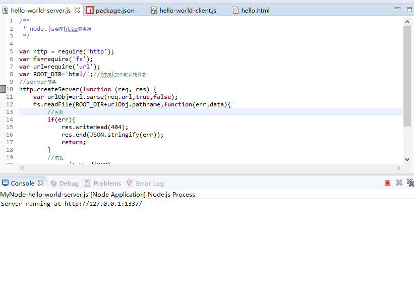
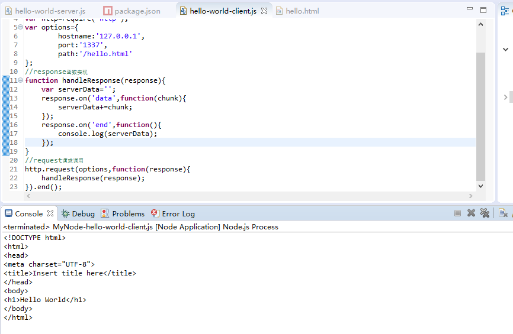
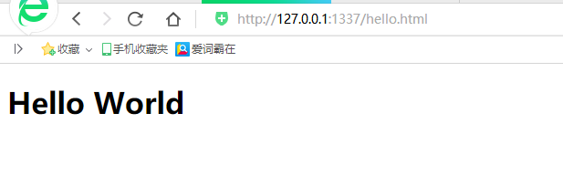

一、node.js实现服务端
创建hello-world-server.js文件，服务端源码如下：
/**
* node.js实现http服务端
*/
var http = require('http');
var fs=require('fs');
var url=require('url');
var ROOT_DIR='html/';//html文件默认根目录
//server服务
http.createServer(function (req, res) {
var urlObj=url.parse(req.url,true,false);
fs.readFile(ROOT_DIR+urlObj.pathname,function(err,data){
//失败
if(err){
res.writeHead(404);
res.end(JSON.stringify(err));
return;
}
//成功
res.writeHead(200);
res.end(data);
});
}).listen(1337, '127.0.0.1');//端口+ip
console.log('Server running at http://127.0.0.1:1337/');
二、node.js实现客户端，客户端源码如下：
/**
* node.js实现http客户端
*/
var http=require('http');
var options={
hostname:'127.0.0.1',
port:'1337',
path:'/hello.html'
};
//response函数实现
function handleResponse(response){
var serverData='';
response.on('data',function(chunk){
serverData+=chunk;
});
response.on('end',function(){
console.log(serverData);
});
}
//request请求调用
http.request(options,function(response){
handleResponse(response);
}).end();
三、项目中创建html文件夹文件夹中创建hello.html, hello.html文件内容如下
<!DOCTYPE html>
<html>
<head>
<meta charset="UTF-8">
<title>Insert title here</title>
</head>
<body>
<h1>Hello World</h1>
</body>
</html>
四、
（1）先运行服务端hello-world-server.js结果如下

（2）在运行客户端hello-world-client.js,结果如下

（3）浏览器访问hello.html文件，访问地址：http://127.0.0.1:1337/hello.html，结果如下
